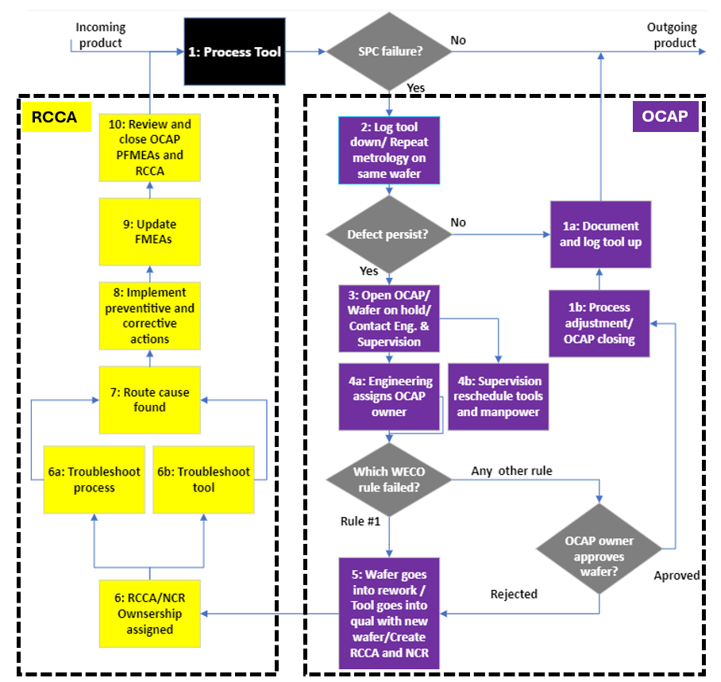

PFMEA & Risk Architecture
Department-wide process-risk analysis, scoring standards, prevention and detection controls, action ownership, and defect-code architecture.
RCCA & Defect Elimination
Containment, structured investigation, root-cause determination, corrective action, verification, and prevention of recurrence.
Digital Quality & Process Control
MES quality workflows, department-wide OCAP response, SPC, approvals, traceability, process monitoring, change governance, and preventive controls.
Selected Quality Impact
Department-wide PFMEA coverage across manufacturing equipment and the processes performed on each tool.
Detailed failure modes, effects, causes, controls, risk scores, recommended actions, owners, dates, and results.
Recurring optical-manufacturing failures reduced within months through coordinated process, equipment, inspection, and quality improvements.
Improved process stability helped enable selected production deliveries as much as one month ahead of schedule.
Department-Wide Process Failure Mode and Effects Analysis
I created and led a department-wide Process Failure Mode and Effects Analysis (PFMEA) covering approximately 50 manufacturing tools and nearly every process performed across the area. This was one of the most extensive quality-engineering efforts I have completed: a single tool could require about a dozen detailed failure-mode records and an individual process about six, resulting in hundreds of analyzed risks across the department.
The work linked each process step, process description, and requirement to its potential failure modes and effects. I then documented potential causes, current prevention and detection controls, risk scores, classifications, recommended actions, responsible owners, target dates, actual completion, and post-action results. That structure made the PFMEA an active engineering and management system—not a compliance document stored after completion.
Process & Requirement
Map the tool, process step, description, and expected manufacturing requirement.
Failure & Controls
Identify failure modes, effects, causes, prevention controls, detection controls, and unresolved gaps.
Score the Risk
Apply consistent severity, occurrence, and inverse-detection scales to calculate the Risk Priority Number (RPN) and establish classification.
Close the Loop
Assign recommended actions, owners, and dates; record completion and evaluate post-action results.
I developed the severity, occurrence, and inverse-detection scales used to make scoring consistent. The analysis exposed not only known failure modes, but also structural shortcomings—conditions that could not yet be prevented, adequately measured or detected, or fully resolved. Those gaps became prioritized engineering actions with accountable owners and follow-through.
I also translated the PFMEA into the department's defect-code list and severity structure. That connected the risk analysis to standardized defect reporting, MES quality records, failure analysis, and trend visibility, allowing actual production events to use the same quality language established by the preventive analysis.
Quality Leadership Through Process Engineering
My quality experience developed through direct responsibility for manufacturing processes and equipment. I was accountable not only for identifying defects, but for understanding the technical mechanism, correcting the process or equipment, verifying the result, and sustaining performance in production.
This creates a practical quality perspective: inspection alone cannot produce quality. Stable performance requires clear requirements, capable equipment, controlled processes, meaningful measurements, disciplined change management, and timely engineering response.
Optical Manufacturing Recovery
Failure Environment
A manufacturing area was experiencing multiple failures per week across coating processes, equipment, cleaning, inspection, and supporting operations. The failures did not have one common cause, so a single corrective action could not resolve the overall problem.
Coordinated Response
I coordinated technical work across process development, equipment, inspection, operators, quality, metrology, and suppliers. Actions addressed individual mechanisms while also strengthening the controls used to detect and prevent recurrence.
Problems Investigated
- Coating delamination and environmental-durability failures
- Thickness or performance non-uniformity
- Spectral deviation from required optical performance
- Chamber leaks and equipment-condition problems
- Witness-sample absorption and measurement anomalies
- Temperature-calibration errors and process-control gaps
- Supplier or material-related quality issues
The combined improvement effort reduced failures from multiple per week to near-zero within months and helped enable selected deliveries up to one month early. This was a cross-functional technical recovery, not the result of one isolated quality tool.
Root Cause & Corrective Action
RCCA has been a major part of my manufacturing work. The investigation begins by defining the problem and containing risk, then separating symptoms from mechanisms and verifying that the selected action changes the actual failure behavior.
Investigation
- Define the failure and affected manufacturing scope
- Review history, measurements, equipment condition, and process changes
- Separate process, equipment, material, inspection, and environmental contributors
- Use structured technical experiments or comparisons when required
Correction & Verification
- Contain affected product and control immediate risk
- Implement corrective and preventive actions
- Update process instructions, equipment controls, or quality records
- Monitor performance to verify effectiveness and prevent recurrence
Requirements, Inspection & Process Controls
I developed and supported optical-coating processes against customer drawings, program specifications, and MIL-PRF-13830 where applicable. This experience represents manufacturing and process ownership; it is not presented as a separate inspection certification.
- Translate drawing and specification requirements into process and inspection criteria
- Define pass/fail requirements and measurement methods
- Coordinate metrology, inspection, and manufacturing feedback
- Control recipes, parameters, materials, equipment condition, and operator instructions
- Support equipment qualification, calibration, preventive maintenance, and readiness
- Document changes and verify continued compliance after improvement activity
MES Quality Workflows & Digital Controls
My Manufacturing Execution System (MES) work allowed quality requirements to move from paper or informal practice into structured digital workflows. The system connects production status, defects, approvals, inspections, product history, and corrective action to the manufacturing record. I used the department PFMEA as a technical foundation for the defect-code taxonomy and severity structure, connecting anticipated process risk to the language used for actual production defects.
Digital Quality Structure
- PFMEA-derived defect types, codes, severity, resolutions, and traceable history
- Nonconformance Report (NCR) and disposition workflows
- Product holds, releases, rework, and scrap controls
- Required inspections and electronic approvals
Governance & Ownership
- Alignment with approved manufacturing and change controls
- Defined responsibility for engineering and quality decisions
- Training on MES quality workflows and approval responsibilities
- Historical data for recurring review and performance tracking
SPC & Structured Failure Response
As the department Statistical Process Control (SPC) lead, I defined the Out-of-Control Action Plan (OCAP) response for each major process or tool. I also created the department-wide response template shown below so SPC alarms would trigger a consistent sequence of product containment, tool control, engineering ownership, investigation, approval, and closure.
The model connected SPC alarms and Western Electric rule failures to tool status, repeat metrology, wafer holds, OCAP ownership, process or equipment troubleshooting, Root Cause and Corrective Action (RCCA), Nonconformance Reports (NCRs), preventive and corrective actions, PFMEA updates, and formal review and closure. This turned the department's separate quality methods into one governed response system.

The dedicated SPC page covers process selection, control-chart structure, Western Electric rules, recurring reviews, training, process capability, and the detailed implementation of these OCAP responses.
Change Control, Preventive Maintenance & Manufacturing Readiness
Change Control Board
Served as a manufacturing member of the Change Control Board, reviewing proposed process changes and providing technical approval feedback on manufacturing risk, required validation, implementation readiness, and alignment with approved controls.
Equipment Risk & Readiness
Worked with Environmental, Health and Safety personnel on equipment assessments addressing pinch points, required labeling, chemical storage, and other equipment-specific hazards before controlled use.
Department Preventive-Maintenance Program
Led the department effort to construct the facility and equipment preventive-maintenance calendar. I reviewed equipment manuals, worked directly with tool owners and the equipment team, identified required maintenance activities and frequencies, and consolidated them into the department's qualification and preventive-maintenance schedule. The result created shared visibility and accountability for equipment readiness instead of relying on disconnected owner knowledge.
Quality Methods & Manufacturing Controls
Corrective Action
RCCA, containment, troubleshooting, verification, and recurrence prevention.
Process Control
SPC, process limits, trending, alerts, Out-of-Control Action Plans (OCAPs), and recurring review.
Technical Analysis
Design of Experiments (DOE), comparisons, measurement analysis, and failure testing.
PFMEA & Risk Prioritization
Process Failure Mode and Effects Analysis (PFMEA), severity/occurrence/detection scoring, Risk Priority Number (RPN), control gaps, and action ownership.
Digital Quality
MES defects, inspections, approvals, dispositions, holds, and traceable records.
Quality Analytics
Historical defect tracking, dashboards, trends, and corrective-action effectiveness.
Quality as an Engineering System
I do not view quality as a final inspection performed after manufacturing. Effective quality begins with process definition, equipment readiness, controlled change, meaningful measurement, and rapid response when a system behaves abnormally.
My experience covers that full loop—from detecting a problem and identifying the technical cause to implementing and sustaining the process, equipment, training, or digital-system changes needed to keep it from returning.